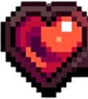

La Cripta de Nekkman
Trabajo Práctico N.º 2


Los cambios se aplican al instante, incluso con la partida en curso, y se guardan solos (localStorage) en este navegador.
Esperando el primer guardado…
Con el guardado automático de arriba funcionando, esto ya no hace
falta para uso normal — quedó como respaldo extra, o para cuando abrís
el juego SIN el servidor local (ej. GitHub Pages, o el .html suelto):
para que tu profesor (u otro navegador/incógnito) vea el mapa que
editaste, tocá el botón de abajo: descarga
cripta_nekkman_config.json. Movelo desde Descargas hasta
ESTA MISMA carpeta (al lado del .html), pisando el que ya esté ahí si
existe.
Opcional (solo Chrome/Edge, solo EN ESTE navegador): vincular un archivo para que cada "Guardar" lo escriba solo, sin tener que descargar y mover a mano cada vez.
Comprobando...
Cada cambio se guarda solo, pero podés tocar este botón para confirmarlo (y escribirlo en el archivo, si hay uno vinculado).
Halo chico que el jugador lleva encima siempre, sin depender de antorchas ni de la niebla.
Cada categoría tiene un único controlador: cambiar un parámetro acá afecta a todos los enemigos de ese tipo, aunque haya varios en el mapa.
Cada tanto emite una sierra que recorre todo el riel de punta a punta (izquierda→derecha si es horizontal, arriba→abajo si es vertical) y daña al jugador y a los enemigos al tocarla.
Al pisarla empieza a "cargar" (picos chicos); si te quedás encima el tiempo de abajo, se activa (picos completos) y hace daño. Si te vas antes, no pasa nada.
Dispara sola en un ciclo fijo — no depende de que nadie esté parado encima. Solo hace daño durante el pico de la llamarada.
Vida BASE de los objetos rompibles (barriles/cajas/cajas grandes/jarrones — rompibles a golpes o con cualquier hechizo de daño). Los que ocupan 2 celdas de ancho aguantan el DOBLE de este valor; un único control para todos — subir el valor también cura de una a los que ya estén dañados pero sigan en pie.
Lo no explorado está en negro total; lo ya explorado pero fuera de tu luz actual, atenuado al 50% (y los enemigos ahí no se ven); lo que está dentro de tu luz, con claridad total.
Las antorchas (herramienta 🔥 del Editor de Mapa) SOLO iluminan — no revelan ni afectan la niebla de guerra de ninguna forma. Lo único que revela niebla es el campo de visión del jugador. Todas las antorchas de la sala comparten esta misma intensidad y color.
La luz propia del jugador se configura en la pestaña 🧍 Jugador.
Sombra ambiente: todo lo que NO tenga una antorcha o al jugador cerca se ve un poco más oscuro/opaco — así la luz de las antorchas se nota más en contraste. No toca la niebla de guerra (lo explorado/campo de visión sigue funcionando exactamente igual que antes).
Se seleccionan desde la barra de abajo (o con 1/2/3) y se aplican haciendo click.
Explota en el punto del click y daña TODO lo que esté en el radio — enemigos, paredes, y al propio jugador si se para adentro.
Mensajes que aparecen arriba tuyo al acercarte a cada puerta trabada, uno por tipo.
Filtro de pantalla vieja sobre TODO el juego (aberración de color RGB + líneas de escaneo + viñeta oscura en los bordes), con pulsos de interferencia cada tanto. Puramente visual — no toca luces, sombra ambiente ni niebla de guerra, se dibuja encima de todo eso.
A más interferencia, pulsos de "ruido" más seguidos y más fuertes (aberración/líneas de escaneo se disparan un instante y vuelven a lo normal) — en 0 el efecto queda fijo, sin parpadeo.
Elegí una herramienta y hacé click sobre el mapa para poner/sacar/mover. Todo se guarda solo (localStorage) y sobrevive recargar la página.
Sin herramienta seleccionada.
Editando: (elegí una sala para editarla directamente, sin tener que desbloquearla jugando)
🚩 Checkpoint: invisible durante el juego real — solo se ve (celeste) acá, mientras estás editando. La primera vez que el jugador lo pisa, pasa a reaparecer ahí (centro de la celda) si muere en esta sala, en vez de en el punto de inicio de siempre. Click para una celda, arrastrá para pintar varias de una.
🪚 Sierra Horizontal/Vertical: mantené apretado y arrastrá para dibujar el riel, del largo que quieras — cada una dibuja siempre en su propio eje, no hace falta "apuntar" con el primer movimiento.
⚠️ Trampa de Pinches: se coloca de un click. No bloquea el paso — quedate parado encima el tiempo configurado para que se active (delay/ cooldown en ⚙️ Editor de Parámetros → Entorno).
Cada manual solo puede existir en UN punto de UN nivel a la vez — si ya lo usaste en otro mapa, hay que sacarlo de ahí primero para poder ponerlo acá.
Ilumina (halo + sombra ambiente + chisporroteo en loop bien bajo) pero NO revela niebla de guerra — eso lo hace únicamente el campo de visión del jugador. Color e intensidad (compartidos por las 2) en ⚙️ Editor de Parámetros → Entorno.
Elegís el sprite exacto — la miniatura ya muestra el tamaño real (celdas).
Se rompen a golpes o con cualquier hechizo de daño (más resistencia cuanto más ancho — ver ⚙️ Editor de Parámetros → Entorno). Al romperse: sonido + explosión + botín que matchea su tamaño.
Sala 1: la fuente y las 3 puertas no se pueden borrar ni mover (son necesarias para ganar). Nivel 2 y Nivel 3: su única puerta (entrada Y salida) y su única fuente SÍ se pueden mover con esta herramienta — nunca se pueden borrar ni duplicar, siempre hay exactamente una de cada una. El resto de las herramientas no tiene restricciones.
🖱️ Seleccionar: por ahora solo funciona con la Trampa de Sierra — click sobre un riel para abrir su panel de velocidad y dirección, a la derecha.
Cada cambio se guarda solo, pero podés tocar este botón para confirmarlo (y escribirlo en el archivo vinculado — ver "📁 Archivo de guardado" en el ⚙️ Editor de Parámetros).